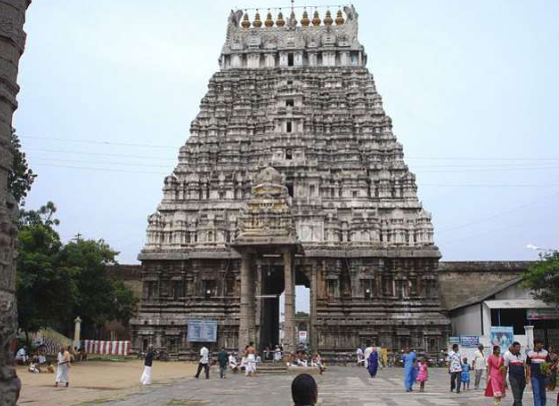

HINDU TEMPLE

Prominent Perumal (Vishnu) temples in Ariyalur include the Jayankondam Varatharaja Perumal Temple, an ancient Chola-era temple with a grand gopuram, and the Kaliyuga Varadaraja Perumal Temple in Kallankurichi, known for its unique 12-foot tall wooden pillar as the main deity